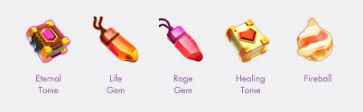

WARDEN EQUIPMENTS IN CLASH OF CLANS
- When attacking, the Grand Warden can use two of the below pieces of Hero Equipment, which change the abilities he has and grants additional stat bonuses.
- The Grand Warden does not use any Hero Equipment when defending.
- Select the equipment below to learn more about the abilities and stat bonuses that each piece gives.

"This powerful master of magic supports Troops by blasting enemies with his Staff! The Grand Warden can even walk or fly over Walls! He’ll make a majestic stand at his Hero Banner when defending."
WARDEN HAS THESE EQUIPMENTS
- rage gem
- life gem
- healing tome
- fireball
- eternal tome